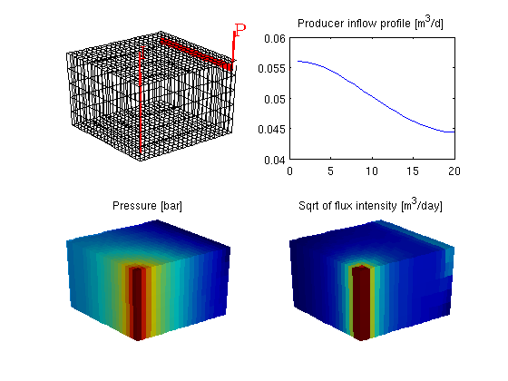

Using Peacemann Well Models
In this example we will demonstrate how our mimetic flow solver can be equipped with a Peacemann type well model. For a vertical well, the model is on the following form
where q is the flow rate p_{bh} is the bottom-hole pressure, r_e is the effective (Peacemann) radius, r_w is the radius of the well, K is the permeability, and h the height of the well. Depending upon what is specified, either the bottom-hole pressure p_bh or the flow rate q end up as extra unknowns per completion in the resulting linear system.
To demonstrate the use of well models, we will (as before) solve the single-phase pressure equation
for a Cartesian grid and isotropic, homogeneous permeability. See the basic flow-solver tutorial for more details on the grid structure, the structure used to hold the solutions, etc.
Contents
Define grid, rock and fluid data
Construct a Cartesian grid of size 20-by-20-by-5 cells, where each cell has dimension 1-by-1-by-1. Set permeability equal 100 mD, and use the default single fluid with density 1000 kg/m^3 and viscosity 1 cP.
nx = 20; ny = 20; nz = 5; G = cartGrid([nx, ny, nz]); G = computeGeometry(G, 'Verbose', true); rock.perm = repmat(100 .* milli*darcy, [G.cells.num, 1]); fluid = initSingleFluid('mu' , 1*centi*poise , ... 'rho', 1014*kilogram/meter^3);
Computing normals, areas, and centroids... Elapsed time is 0.006047 seconds. Computing cell volumes and centroids... Elapsed time is 0.160206 seconds.
Initialize and construct linear system
Initialize solution structure with reservoir pressure equal 0. Compute mimetic inner products from input grid and rock properties.
S = computeMimeticIP(G, rock, 'Verbose', true);
Using inner product: 'ip_simple'. Computing cell inner products ... Elapsed time is 0.169333 seconds. Assembling global inner product matrix ... Elapsed time is 0.001795 seconds.
Introduce wells
We will include two wells, one rate-controlled vertical well and one horizontal well controlled by bottom-hole pressure. Wells are described using a Peacemann model, giving an extra set of equations that need to be assembled.
The first well is vertical well (vertical is default):
- completion in cells: cellsWell1
- controlled by injection rate = 1.0 [m^3/d]
- radius = 0.1. [m]
cellsWell1 = 1 : nx*ny : nx*ny*nz; radius = .1; W = addWell([], G, rock, cellsWell1, 'Type', 'rate', ... 'Val', 1.0/day(), 'Radius', radius, 'name', 'I'); disp('Well #1: '); display(W(1));
Well #1:
cells: [5x1 double]
type: 'rate'
val: 1.1574e-05
r: 0.1000
dir: [5x1 char]
WI: [5x1 double]
dZ: [5x1 double]
name: 'I'
compi: [1 0 0]
refDepth: 0
sign: 1
The second well is horizontal in the 'y' direction:
- completion in cells: cellsWell2
- controlled by bottom hole pressure, bhp = 1e5 [Pa]
- radius = 0.1 [m]
cellsWell2 = nx : ny : nx*ny; W = addWell(W, G, rock, cellsWell2, 'Type', 'bhp', ... 'Val', 1.0e5, 'Radius', radius, 'Dir', 'y', 'name', 'P'); disp('Well #2: '); display(W(2));
Well #2:
cells: [20x1 double]
type: 'bhp'
val: 100000
r: 0.1000
dir: [20x1 char]
WI: [20x1 double]
dZ: [20x1 double]
name: 'P'
compi: [1 0 0]
refDepth: 0
sign: []
We plot the wells to check if the wells are placed as we wanted them. (The plot will later be moved to subplot(2,2,1), hence we first find the corresponding axes position before generating the handle graphics).
subplot(2,2,1), pos = get(gca,'Position'); clf plotGrid(G, 'FaceColor', 'none'); view(3), camproj perspective, axis tight off, camlight headlight [ht, htxt, hs] = plotWell(G, W, 'radius', radius, 'height', 2); set(htxt, 'FontSize', 16);
Once the wells are added, we can generate the components of the linear system corresponding to the two wells and initialize the solution structure (with correct bhp)
resSol = initState(G, W, 0); display(resSol.wellSol);
1x2 struct array with fields:
flux
pressure
Solve linear system
Solve linear system construced from S and W to obtain solution for flow and pressure in the reservoir and the wells.
gravity off resSol = solveIncompFlow(resSol, G, S, fluid, 'wells', W);
Report results
We move the plot of the grids and wells to the upper-left subplot. The producer inflow profile is shown in the upper-right and the cell pressures in the lower-left subplot. In the lower-right subplot, we show the flux intensity, which must be constructed by averaging over cell faces (this is what is achieved by 'rldecode' and 'accumarray')
%subplot(2,2,1) set(gca, 'Position', pos); % move the current plot subplot(2,2,2) plot(convertTo(-resSol.wellSol(2).flux, meter^3/day)) title('Producer inflow profile [m^3/d]'); subplot(2,2,3) plotCellData(G, convertTo(resSol.pressure(1:G.cells.num), barsa)); title('Pressure [bar]') view(3), camproj perspective, axis tight off, camlight headlight subplot(2,2,4) cellNo = rldecode(1:G.cells.num, diff(G.cells.facePos), 2) .'; cf = accumarray(cellNo, abs(resSol.flux(G.cells.faces(:,1))) ); plotCellData(G, convertTo(cf, meter^3/day) ); title('Sqrt of flux intensity [m^3/day]') view(3), camproj perspective, axis tight off, camlight headlight